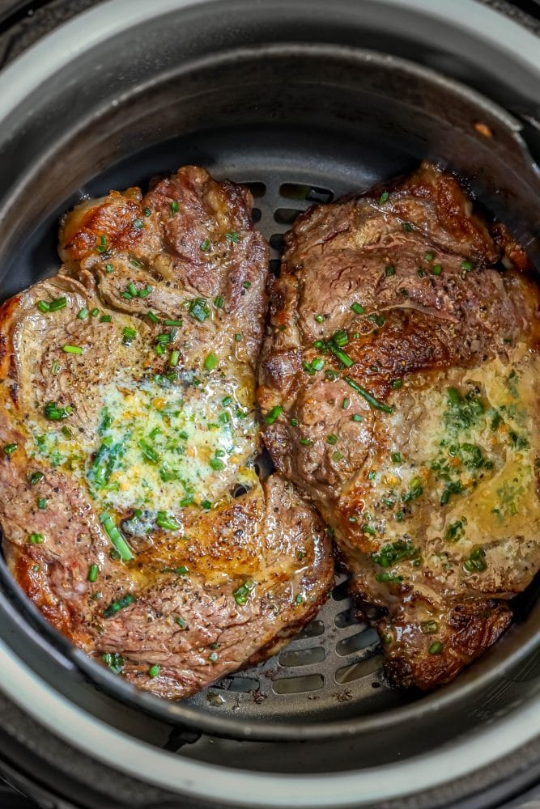

Recipe Description
These air fryer rib-eye steaks definitely rival a steak cooked on a grill
Ingredients
- 2 rib-eye steaks, cut 1 1/2- inch thick
- 4 teaspoons grill seasoning (any steak seasoning you have)
- ¼ cup olive oil
- ½ cup reduced-sodium soy sauce
Steps
- Combine steaks, soy sauce, olive oil, and seasoning in a large resealable bag. Marinate meat for at least 2 hours.
- Remove steaks from bag and discard the marinade. Pat excess oil off the steaks.
- Add about 1 tablespoon water to the bottom of the air fryer pan to prevent it from smoking during the cooking process.
- Preheat the air fryer to 400 degrees F (200 degrees C).
- Add steaks to air fryer and cook for 7 minutes. Turn steaks and cook for another 7 minutes until steak is medium rare. For a medium steak, increase the total cook time to 16 minutes, flipping steak after 8 minutes.
- Remove steaks, keep warm, and let sit for about 4 minutes before serving. Enjoy!